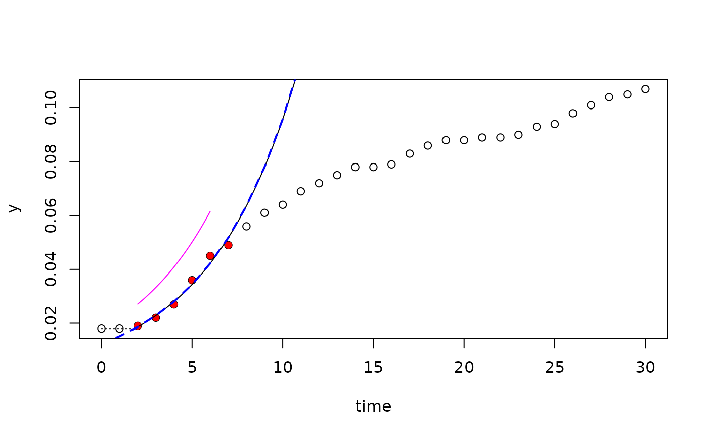
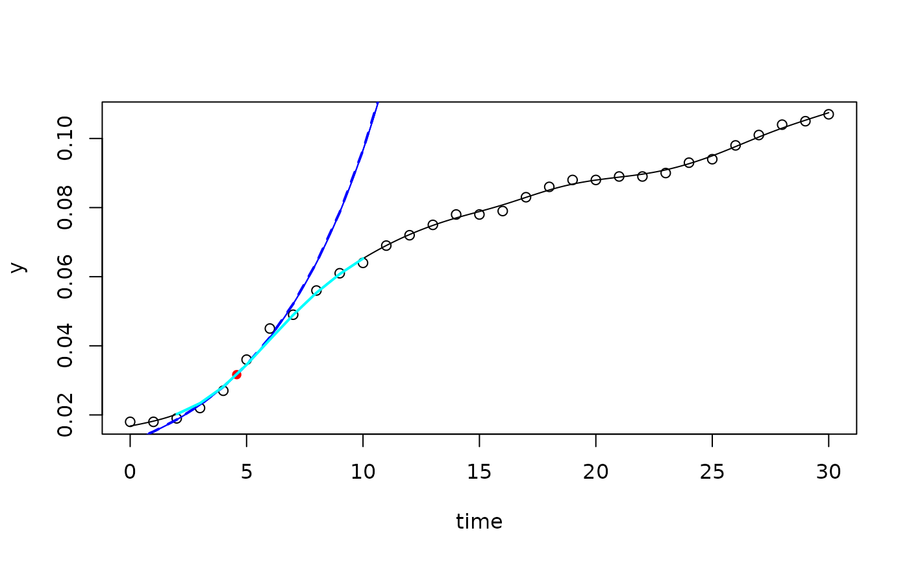
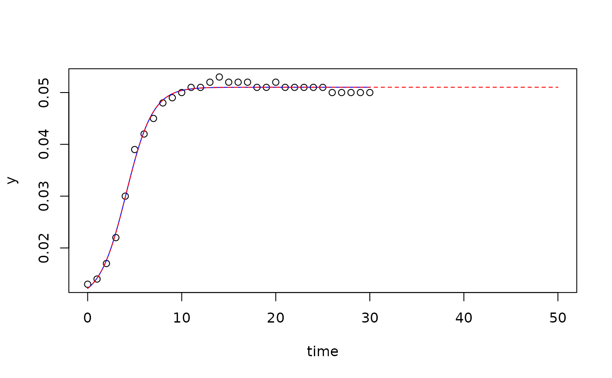

Class-specific methods of package growthrates to make predictions.
Usage
# S4 method for class 'growthrates_fit'
predict(object, ...)
# S4 method for class 'smooth.spline_fit'
predict(object, newdata = NULL, ..., type = c("exponential", "spline"))
# S4 method for class 'easylinear_fit'
predict(object, newdata = NULL, ..., type = c("exponential", "no_lag"))
# S4 method for class 'nonlinear_fit'
predict(object, newdata, ...)
# S4 method for class 'multiple_fits'
predict(object, ...)Arguments
- object
name of a 'growthrates' object for which prediction is desired.
- ...
additional arguments affecting the predictions produced.
- newdata
an optional data frame with column 'time' for new time steps with which to predict.
- type
type of predict. Can be
'exponential'or'spline'forfit_spline, resp.'exponential'or'no_lag'forfit_easylinear.
Examples
data(bactgrowth)
splitted.data <- multisplit(bactgrowth, c("strain", "conc", "replicate"))
## get table from single experiment
dat <- splitted.data[[1]]
## --- linear fit -----------------------------------------------------------
fit <- fit_easylinear(dat$time, dat$value)
plot(fit)
pr <- predict(fit)
lines(pr[,1:2], col="blue", lwd=2, lty="dashed")
pr <- predict(fit, newdata=list(time=seq(2, 6, .1)), type="no_lag")
lines(pr[,1:2], col="magenta")

## --- spline fit -----------------------------------------------------------
fit1 <- fit_spline(dat$time, dat$value, spar=0.5)
coef(fit1)
#> y0 mumax
#> 0.01234962 0.20570733
summary(fit1)
#> Fitted smoothing spline:
#> Call:
#> smooth.spline(x = time, y = ylog, spar = 0.5)
#>
#> Smoothing Parameter spar= 0.5 lambda= 0.0001077001
#> Equivalent Degrees of Freedom (Df): 9.337058
#> Penalized Criterion (RSS): 0.02368248
#> GCV: 0.001564423
#>
#> Parameter values of exponential growth curve:
#> Maximum growth at x= 4.576604 , y= 0.03166038
#> y0 = 0.01234962
#> mumax = 0.2057073
#>
#> r2 of log transformed data= 0.9974769
plot(fit1)
pr <- predict(fit1)
lines(pr[,1:2], lwd=2, col="blue", lty="dashed")
pr <- predict(fit1, newdata=list(time=2:10), type="spline")
lines(pr[,1:2], lwd=2, col="cyan")

## --- nonlinear fit --------------------------------------------------------
dat <- splitted.data[["T:0:2"]]
p <- c(y0 = 0.02, mumax = .5, K = 0.05, h0 = 1)
fit2 <- fit_growthmodel(grow_baranyi, p=p, time=dat$time, y=dat$value)
## prediction for given data
predict(fit2)
#> time y
#> [1,] 0 0.01218537
#> [2,] 1 0.01417349
#> [3,] 2 0.01763037
#> [4,] 3 0.02295527
#> [5,] 4 0.02979975
#> [6,] 5 0.03680981
#> [7,] 6 0.04250263
#> [8,] 7 0.04631674
#> [9,] 8 0.04855420
#> [10,] 9 0.04976575
#> [11,] 10 0.05039345
#> [12,] 11 0.05071123
#> [13,] 12 0.05087023
#> [14,] 13 0.05094931
#> [15,] 14 0.05098853
#> [16,] 15 0.05100795
#> [17,] 16 0.05101756
#> [18,] 17 0.05102232
#> [19,] 18 0.05102467
#> [20,] 19 0.05102583
#> [21,] 20 0.05102641
#> [22,] 21 0.05102669
#> [23,] 22 0.05102683
#> [24,] 23 0.05102690
#> [25,] 24 0.05102694
#> [26,] 25 0.05102695
#> [27,] 26 0.05102696
#> [28,] 27 0.05102696
#> [29,] 28 0.05102697
#> [30,] 29 0.05102697
#> [31,] 30 0.05102697
## prediction for new data
pr <- predict(fit2, newdata=data.frame(time=seq(0, 50, 0.1)))
plot(fit2, xlim=c(0, 50))
lines(pr[, c("time", "y")], lty="dashed", col="red")
